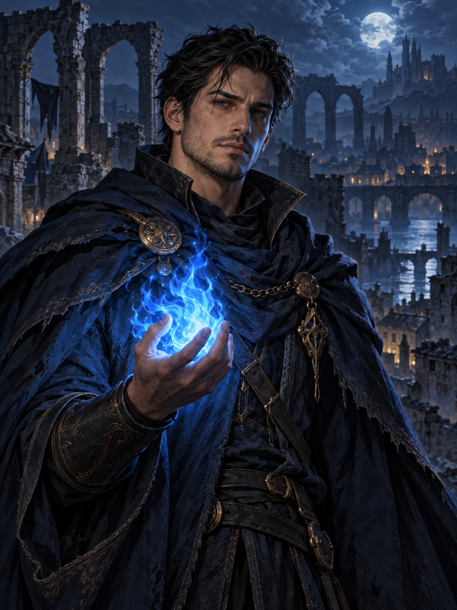

LENDÁRIO01
RELÍQUIA · VÍNCULO VITAL
Coração de Vhalora
A última centelha da cidade, guardada em um medalhão de obsidiana. Pulsa quando um sobrevivente está por perto.
+20 de afinidade arcana
CRÔNICAS DE VHALORA
GUARDIÃO PIROMANTE NÍVEL 24
O Portador da Chama Azul
Quando sua cidade virou cinzas,
ele escolheu ser a luz que restou.

01 / SOBRE O HERÓI
Nero era aprendiz de ferreiro em Vhalora, uma cidade erguida ao redor de um fogo que guardava as memórias de seus habitantes. Na Noite Sem Aurora, a Ordem do Véu tentou roubar essa fonte de poder. As torres caíram. O fogo se apagou.
Entre os escombros, Nero encontrou uma última centelha azul. Ao protegê-la com as próprias mãos, vinculou sua vida às lembranças da cidade. Agora, percorre as terras devastadas em busca dos três fragmentos do Farol de Vhalora, capaz de devolver um lar aos sobreviventes.
Cada vez que usa a chama além do limite, perde uma lembrança pessoal. Seu maior desafio é salvar o passado sem esquecer quem ele é.
02 / ATRIBUTOS & HABILIDADES
Forjado pela perda.
Guiado pela memória.
Escala de 0 a 100 · especialidade em magia e proteção
Revela rastros do passado em objetos e ilumina caminhos ocultos pela Ordem do Véu.
REVELAÇÃO · 30 DE MANAEnvolve aliados em um escudo de fogo frio que absorve o impacto dos ataques.
PROTEÇÃO · 40 DE MANATransforma o corpo em cinzas por um instante para atravessar uma curta distância.
MOBILIDADE · 20 DE MANA03 / INVENTÁRIO & CONQUISTAS
Relíquias que carregam
mais do que poder.
RELÍQUIA · VÍNCULO VITAL
A última centelha da cidade, guardada em um medalhão de obsidiana. Pulsa quando um sobrevivente está por perto.
ARMA · ESPADA LONGA
Forjada por Nero com o aço da oficina de seu pai. Seu fio azul corta os selos que mantêm as ruínas adormecidas.
ARMADURA · MANTO
Tecido com fios resistentes às brasas. No forro, Nero bordou os nomes das pessoas que prometeu reencontrar.
04 / CONTATO COM A GUILDA
A Vigília das Cinzas reúne viajantes, curandeiros e guardiões que procuram os sobreviventes de Vhalora. Onde houver uma luz acesa, ainda existe um caminho de volta.
Contato fictício: vigilia@example.com. O link do Discord abre a plataforma, não um servidor da guilda.
Não carrego o fogo
NERO VAEL
para destruir.
Carrego para lembrar.